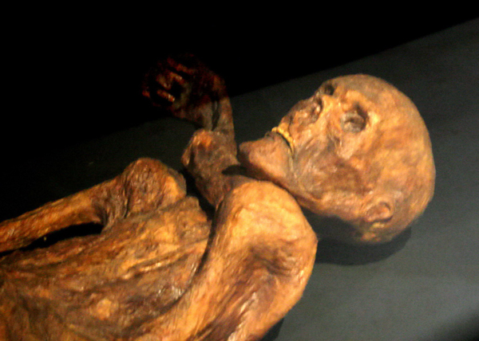

SOBRE MI.
Soy Alejandro, tengo 21 años y hace 3 años encontré en el tatuaje una forma de expresión que se volvió parte de mi vida. Mi estilo se enfoca en el blackwork, donde juego con líneas, sombras y contrastes para crear piezas con personalidad y carácter. Trabajo en Tristán Suárez, un espacio pensado para que te sientas cómodo/a desde el primer momento. Cada diseño que hago está pensado para vos, con dedicación y respeto por la piel que lo va a llevar. Si estás buscando un tatuaje con identidad y fuerza, estás en el lugar indicado.
Historia del tatuaje
El tatuaje se ha practicado en diferentes culturas de todo el mundo desde el Neolítico, como demuestran cuerpos momificados, piezas artísticas y el registro arqueológico, según el pueblo como costumbre ritual, estética, de identidad, protección, curación o castigo.
Origen
Se cree que esta era una práctica conocida por múltiples culturas y realizada de manera distinta. Es así como se tiene registro que en 1991 en un glaciar situado en la actual frontera entre Austria con Italia se encontró un cazador neolítico congelado de hace aproximadamente 5.300 años quien es llamado Ötzi  y quien tenía espalda y rodillas tatuadas. Un segundo hombre fue encontrado en Siberia con un tatuaje en el hombro y por los estudios realizados se calcula que data de hace 2.600 años.
Tatuaje
Un tatuaje es una forma de modificación corporal, la cual consiste en alterar de manera temporal o permanente el color de la piel, sobre la cual se plasma un dibujo, un patrón, una figura, composición o un texto, el cual se plasma con agujas u otros utensilios que inyectan tinta o algún otro pigmento en la dermis de una persona.